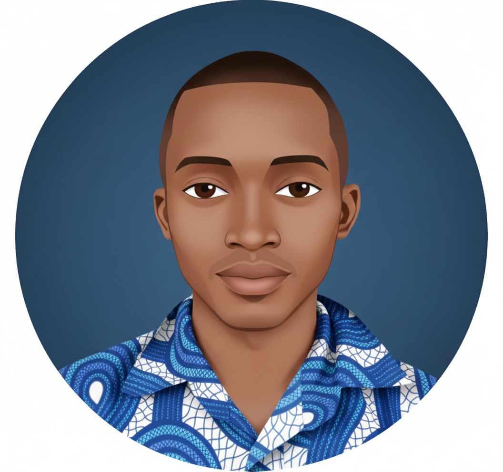

TERMINALE (Toutes Séries)
Le Codex du Vivant
Sciences de la Vie et de la Terre
avec Professeur Deric
avec Professeur Deric
🧬🔬🌍
🥼
"Salutations, futur bachelier. La SVT n'est pas du par cœur, c'est de la logique !
De la molécule d'ADN aux plaques tectoniques, tout est connecté.
Mets tes gants, on entre dans le laboratoire du BAC."
I. La Mécanique de la Vie (Génétique) Séries D, C, S
C'est le pilier du programme scientifique. Tu dois comprendre comment l'information passe du noyau à la protéine.
Le Dogme Central : Synthèse des Protéines
L'information suit un chemin précis :
ADN ➔ Transcription ➔ ARNm ➔ Traduction ➔ PROTÉINE
- 1. Transcription (Noyau) : L'ADN s'ouvre. Une enzyme (ARN Polymérase) copie un brin en ARNm (Messager).
⚠️ Piège : Dans l'ARN, la Thymine (T) est remplacée par l'Uracile (U). - 2. Traduction (Cytoplasme) : Le Ribosome lit l'ARNm par paquets de 3 lettres (Codons). Chaque codon correspond à un Acide Aminé.
La Mitose (Reproduction conforme)
1 Cellule mère (2n) ➔ 2 Cellules filles (2n).
Les clones. Conserve l'information.
1 Cellule mère (2n) ➔ 2 Cellules filles (2n).
Les clones. Conserve l'information.
La Méiose (Reproduction sexuelle)
1 Cellule mère (2n) ➔ 4 Gamètes (n).
Brassage génétique (Inter/Intra chromosomique). Crée la diversité.
1 Cellule mère (2n) ➔ 4 Gamètes (n).
Brassage génétique (Inter/Intra chromosomique). Crée la diversité.
II. Le Corps Défensif (Immunologie) Toutes Séries
Le Soi vs le Non-Soi. Un sujet fréquent au BAC, surtout lié au VIH/SIDA.
Immunité Innée (Immédiate)
Les barrières (peau) et les Phagocytes.
Réaction inflammatoire (Rougeur, Chaleur, Douleur, Gonflement).
Les barrières (peau) et les Phagocytes.
Réaction inflammatoire (Rougeur, Chaleur, Douleur, Gonflement).
Immunité Acquise (Spécifique)
LB (Lymphocytes B) : Produisent des Anticorps (Immunité Humorale).
LT8 (Lymphocytes Tueurs) : Détruisent les cellules infectées (Immunité Cellulaire).
LT4 (Auxiliaires) : Les chefs d'orchestre. Sans eux, pas de défense (Cible du VIH).
LB (Lymphocytes B) : Produisent des Anticorps (Immunité Humorale).
LT8 (Lymphocytes Tueurs) : Détruisent les cellules infectées (Immunité Cellulaire).
LT4 (Auxiliaires) : Les chefs d'orchestre. Sans eux, pas de défense (Cible du VIH).
🩸
Astuce BAC : Si on te montre une courbe d'anticorps, regarde si elle monte vite (réponse secondaire, mémoire) ou lentement (réponse primaire).
III. La Reproduction Humaine Séries D, S, A
Régulation hormonale et gamétogenèse.
Les Hormones Sexuelles (Rétrocontrôle)
Le cerveau (Hypothalamus-Hypophyse) contrôle les organes sexuels via FSH et LH.
- Chez l'Homme : La Testostérone (produite par les testicules) freine le cerveau (Rétrocontrôle Négatif) pour garder un taux constant.
- Chez la Femme : C'est cyclique.
- Début de cycle : Rétrocontrôle Négatif.
- Avant l'ovulation : Rétrocontrôle POSITIF des œstrogènes ➔ Pic de LH ➔ Ovulation.
IV. La Terre, Planète Active Séries C, D, S
Tectonique des plaques et géologie de Madagascar.
La Subduction
Une plaque océanique (dense) plonge sous une plaque continentale (légère).
Conséquences : Séismes profonds, Volcanisme explosif (Andésite), Métamorphisme.
Une plaque océanique (dense) plonge sous une plaque continentale (légère).
Conséquences : Séismes profonds, Volcanisme explosif (Andésite), Métamorphisme.
La Collision
Deux continents s'affrontent.
Conséquences : Chaînes de montagnes (Alpes, Himalaya), Pli, Faille, Chevauchement.
Deux continents s'affrontent.
Conséquences : Chaînes de montagnes (Alpes, Himalaya), Pli, Faille, Chevauchement.
Focus Madagascar (Stratigraphie)
Le BAC interroge souvent sur les bassins sédimentaires (Morondava, Mahajanga).
Retiens les séries sédimentaires :
Sakoa (Charbon) ➔ Sakamena (Reptiles) ➔ Isalo (Grès).
Le BAC interroge souvent sur les bassins sédimentaires (Morondava, Mahajanga).
Retiens les séries sédimentaires :
Sakoa (Charbon) ➔ Sakamena (Reptiles) ➔ Isalo (Grès).
L'Épreuve Type BAC (Génétique)
Sujet : On croise deux variétés de pois. P1 (Graines Jaunes et Lisses) x P2 (Graines Vertes et Ridées).
La génération F1 est 100% Jaune et Lisse.
Analyse de Deric :
- Dominance : F1 est 100% Jaune/Lisse. Donc "Jaune" domine "Vert" et "Lisse" domine "Ridé".
- Notation : J (Jaune), v (vert), L (Lisse), r (ridé).
- Génotypes : P1 est homozygote (J//J L//L). P2 est homozygote (v//v r//r).
- F1 : Hétérozygote (J//v L//r).
- Croisement F1 x F1 : Si les gènes sont indépendants, on obtiendra les proportions 9/16, 3/16, 3/16, 1/16.
"La vie trouve toujours un chemin... vers la mention !"
🌿🦎🎓